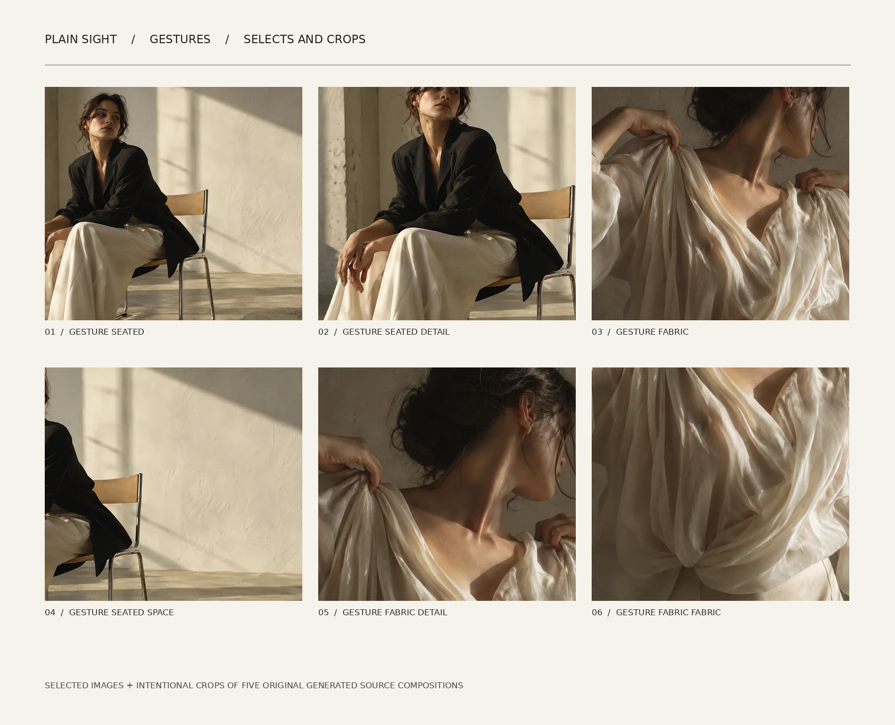
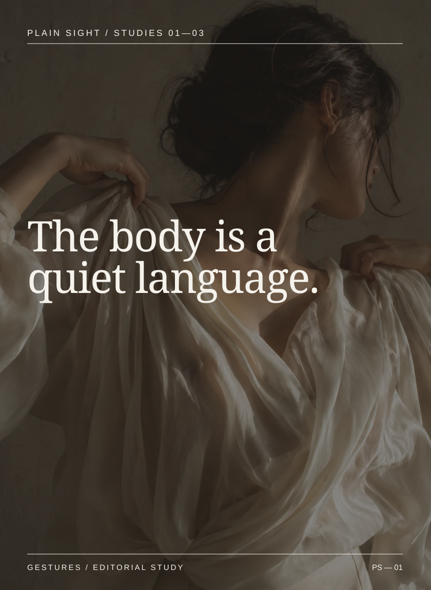
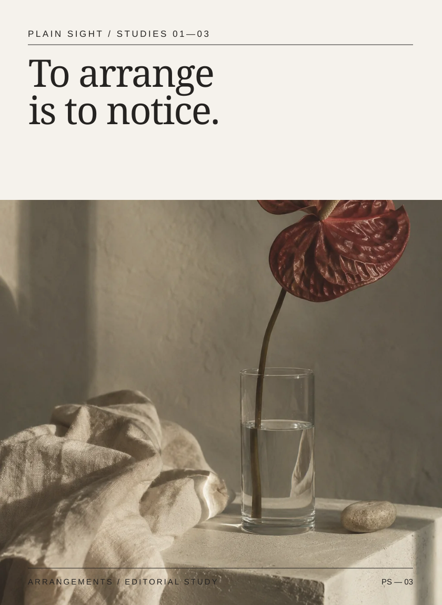
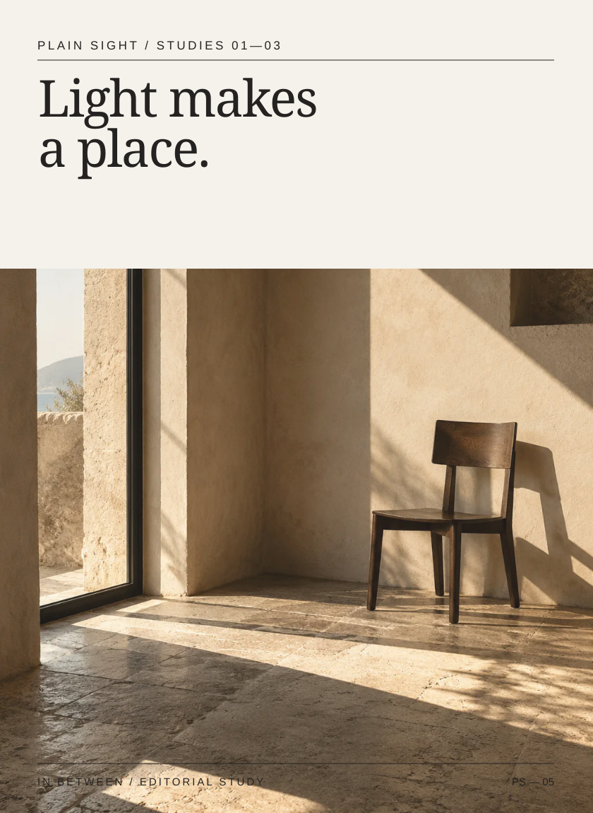
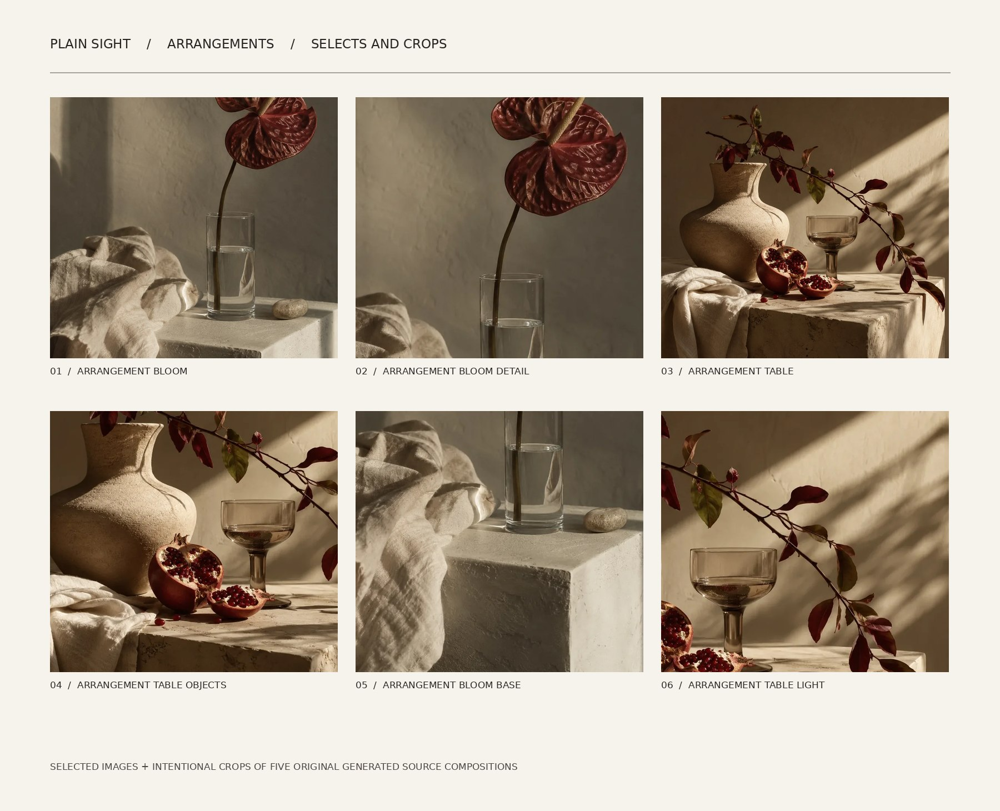
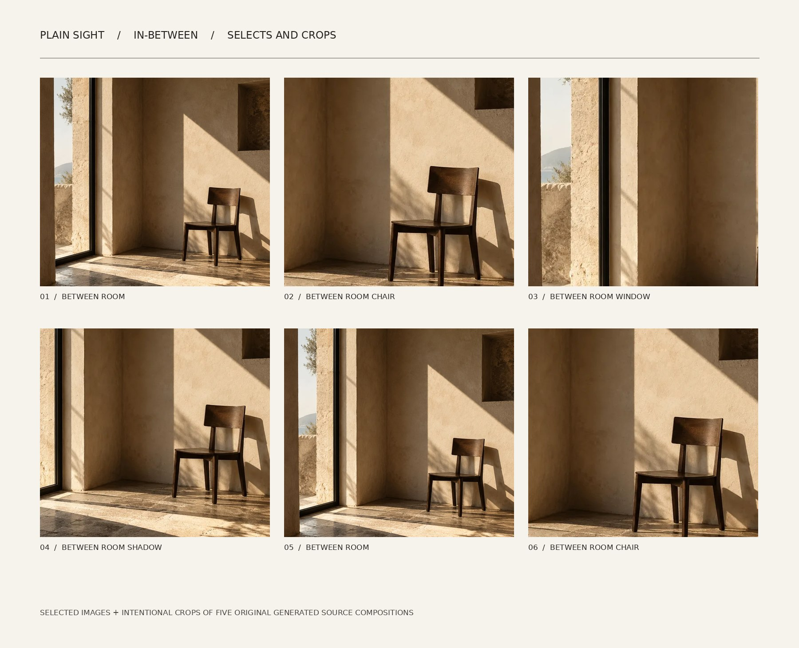

STUDIES 01—03 / EDITION 2026
A publication
for looking.
A 24-page print-layout study, three chapters, five original generated image sources, editorial crops, sequences and typographic pauses. The full pages exist in the linked PDF.
Digital print-layout specimen; not preflight-certified by a commercial printer. Screen-optimized images may require replacement for large physical print production.
01 / SELECTED PAGES
Inside
the edition.
Images lead. Type arrives when needed. The publication alternates between quiet image spreads and readable contextual pages.



02 / CAMPAIGN ARTWORK
Six different
ways of seeing.
Distinct compositions with editable vector typography. SVG assets link to their original image files, so keep the project folder intact when editing.






03 / PHOTO SEQUENCING
Selection
is direction.
Selection sheets transparently compare original images and alternative crops. Multiple frames do not imply multiple camera captures.


The details
make the edition.
Letter-size landscape specimen. 24 internally laid-out pages. Exported RGB print-review PDF with illustration-quality images, not a vendor-approved CMYK release.
Read print specifications ↗04 / GRAPHIC SYSTEM
From print
to screen.
Six individually composed social posts, responsive email and printed-stationery examples. See editable source files included in the ZIP.